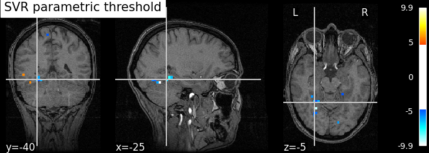
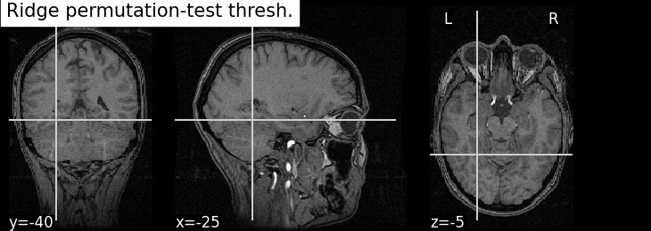
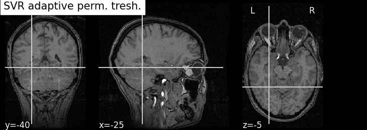
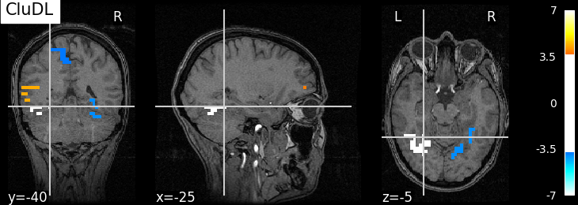
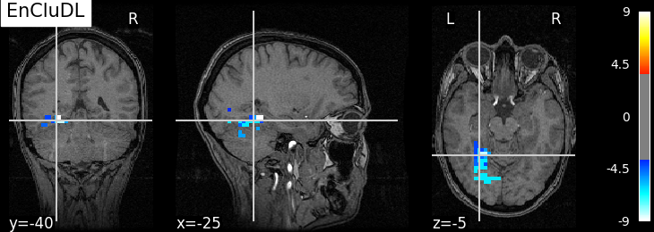

Note
Click here to download the full example code
Support recovery on fMRI data¶
This example compares several methods that estimate a decoder map support with statistical guarantees. More precisely, we aim at thresholding the weights of some estimated decoder maps according to the confidence we have that they are nonzero. Here, we work with the Haxby dataset and we focus on the ‘face vs house’ contrast. Thus, we consider the labeled activation maps of a given subject and try produce a brain map that corresponds to the discriminative pattern that makes the decoding of the two conditions.
In this example, we show that standard statistical methods (i.e., method such as thresholding by permutation test the SVR or Ridge decoder or the algorithm introduced by Gaonkar et al. 1) are not powerful when applied on the uncompressed problem (i.e., the orignal problem in which the activation maps are not reduced using compression techniques such as parcellation). This is notably due to the high dimensionality (too many voxels) and structure of the data (too much correlation between neighboring voxels). We also present two methods that offer statistical guarantees but with a (small) spatial tolerance on the shape of the support: clustered desparsified lasso (CLuDL) combines clustering (parcellation) and statistical inference ; ensemble of clustered desparsified lasso (EnCluDL) adds a randomization step over the choice of clustering.
EnCluDL is powerful and does not depend on a unique clustering choice. As shown in Chevalier et al. (2021) 2, for several tasks the estimated support (predictive regions) looks relevant.
References¶
- 1
Gaonkar, B., & Davatzikos, C. (2012, October). Deriving statistical significance maps for SVM based image classification and group comparisons. In International Conference on Medical Image Computing and Computer-Assisted Intervention (pp. 723-730). Springer, Berlin, Heidelberg.
- 2
Chevalier, J. A., Nguyen, T. B., Salmon, J., Varoquaux, G., & Thirion, B. (2021). Decoding with confidence: Statistical control on decoder maps. NeuroImage, 234, 117921.
Imports needed for this script¶
import numpy as np
import pandas as pd
from sklearn.utils import Bunch
from sklearn.cluster import FeatureAgglomeration
from sklearn.feature_extraction import image
from sklearn.linear_model import Ridge
from nilearn import datasets
from nilearn.input_data import NiftiMasker
from nilearn.image import mean_img
from nilearn.plotting import plot_stat_map, show
from hidimstat.stat_tools import zscore_from_pval, pval_from_scale
from hidimstat.standardized_svr import standardized_svr
from hidimstat.permutation_test import permutation_test, permutation_test_cv
from hidimstat.adaptive_permutation_threshold import ada_svr
from hidimstat.clustered_inference import clustered_inference
from hidimstat.ensemble_clustered_inference import ensemble_clustered_inference
Out:
/home/runner/.local/lib/python3.8/site-packages/nilearn/datasets/__init__.py:93: FutureWarning: Fetchers from the nilearn.datasets module will be updated in version 0.9 to return python strings instead of bytes and Pandas dataframes instead of Numpy arrays.
warn("Fetchers from the nilearn.datasets module will be "
Function to fetch and preprocess Haxby dataset¶
def preprocess_haxby(subject=2, memory=None):
'''Gathering and preprocessing Haxby dataset for a given subject.'''
# Gathering data
haxby_dataset = datasets.fetch_haxby(subjects=[subject])
fmri_filename = haxby_dataset.func[0]
behavioral = pd.read_csv(haxby_dataset.session_target[0], sep=" ")
# conditions = pd.DataFrame.to_numpy(behavioral['labels'])
conditions = behavioral['labels'].values
session_label = behavioral['chunks'].values
condition_mask = np.logical_or(conditions == 'face', conditions == 'house')
groups = session_label[condition_mask]
# Loading anatomical image (back-ground image)
if haxby_dataset.anat[0] is None:
bg_img = None
else:
bg_img = mean_img(haxby_dataset.anat)
# Building target where '1' corresponds to 'face' and '-1' to 'house'
y = np.asarray((conditions[condition_mask] == 'face') * 2 - 1)
# Loading mask
mask_img = haxby_dataset.mask
masker = NiftiMasker(mask_img=mask_img, standardize=True,
smoothing_fwhm=None, memory=memory)
# Computing masked data
fmri_masked = masker.fit_transform(fmri_filename)
X = np.asarray(fmri_masked)[condition_mask, :]
return Bunch(X=X, y=y, groups=groups, bg_img=bg_img, masker=masker)
Gathering and preprocessing Haxby dataset for a given subject¶
The preprocess_haxby function make the preprocessing of the Haxby dataset, it outputs the preprocessed activation maps for the two conditions ‘face’ or ‘house’ (contained in X), the conditions (in y), the session labels (in groups) and the mask (in masker). You may choose a subject in [1, 2, 3, 4, 5, 6]. By default subject=2.
Out:
Dataset created in /home/runner/nilearn_data/haxby2001
Downloading data from https://www.nitrc.org/frs/download.php/7868/mask.nii.gz ...
...done. (0 seconds, 0 min)
Downloading data from http://data.pymvpa.org/datasets/haxby2001/MD5SUMS ...
...done. (0 seconds, 0 min)
Downloading data from http://data.pymvpa.org/datasets/haxby2001/subj2-2010.01.14.tar.gz ...
Downloaded 20357120 of 291168628 bytes (7.0%, 13.4s remaining)
Downloaded 59711488 of 291168628 bytes (20.5%, 7.8s remaining)
Downloaded 99532800 of 291168628 bytes (34.2%, 5.8s remaining)
Downloaded 141115392 of 291168628 bytes (48.5%, 4.3s remaining)
Downloaded 182607872 of 291168628 bytes (62.7%, 3.0s remaining)
Downloaded 223739904 of 291168628 bytes (76.8%, 1.8s remaining)
Downloaded 263651328 of 291168628 bytes (90.5%, 0.7s remaining) ...done. (8 seconds, 0 min)
Extracting data from /home/runner/nilearn_data/haxby2001/def37a305edfda829916fa14c9ea08f8/subj2-2010.01.14.tar.gz..... done.
Initializing FeatureAgglomeration object that performs the clustering¶
For fMRI data taking 500 clusters is generally a good default choice.
n_clusters = 500
# Deriving voxels connectivity.
shape = mask.shape
n_x, n_y, n_z = shape[0], shape[1], shape[2]
connectivity = image.grid_to_graph(n_x=n_x, n_y=n_y, n_z=n_z, mask=mask)
# Initializing FeatureAgglomeration object.
ward = FeatureAgglomeration(n_clusters=n_clusters, connectivity=connectivity)
Making the inference with several algorithms¶
First, we try to recover the discriminative partern by computing p-values from SVR decoder weights and a parametric approximation of the distribution of these weights.
# We precomputed the regularization parameter by CV (C = 0.1) to reduce the
# computation time of the example.
beta_hat, scale = standardized_svr(X, y, Cs=[0.1])
pval_std_svr, _, one_minus_pval_std_svr, _ = pval_from_scale(beta_hat, scale)
Now, we compute p-values thanks to permutation tests applied to 1/the weights of the SVR decoder or 2/the weights of the Ridge decoder.
# To derive the p-values from the SVR decoder, you may change the next line by
# `SVR_permutation_test_inference = True`. It should take around 15 minutes.
SVR_permutation_test_inference = False
if SVR_permutation_test_inference:
# We computed the regularization parameter by CV (C = 0.1)
pval_corr_svr_perm_test, one_minus_pval_corr_svr_perm_test = \
permutation_test_cv(X, y, n_permutations=50, C=0.1)
# Another method is to compute the p-values by permutation test from the
# Ridge decoder. The solution provided by this method should be very close to
# the previous one and the computation time is much shorter: around 20 seconds.
estimator = Ridge()
pval_corr_ridge_perm_test, one_minus_pval_corr_ridge_perm_test = \
permutation_test(X, y, estimator=estimator, n_permutations=200)
Out:
[Parallel(n_jobs=1)]: Using backend SequentialBackend with 1 concurrent workers.
[Parallel(n_jobs=1)]: Done 200 out of 200 | elapsed: 14.3s finished
Now, let us run the algorithm introduced by Gaonkar et al. (c.f. References).
Since the estimator they derive is obtained by approximating the hard margin
SVM formulation, we referred to this method as “ada-SVR” which stands for
“Adaptive Permutation Threshold SVR”. The function is ada_svr.
beta_hat, scale = ada_svr(X, y)
pval_ada_svr, _, one_minus_pval_ada_svr, _ = pval_from_scale(beta_hat, scale)
Now, the clustered inference algorithm which combines parcellation and high-dimensional inference (c.f. References).
beta_hat, pval_cdl, _, one_minus_pval_cdl, _ = \
clustered_inference(X, y, ward, n_clusters)
Out:
Clustered inference: n_clusters = 500, inference method = desparsified-lasso, seed = 0
/home/runner/.local/lib/python3.8/site-packages/sklearn/linear_model/_coordinate_descent.py:526: ConvergenceWarning: Objective did not converge. You might want to increase the number of iterations. Duality gap: 1.7422256933568008, tolerance: 0.21600000000000003
model = cd_fast.enet_coordinate_descent_gram(
/home/runner/work/hidimstat/hidimstat/hidimstat/desparsified_lasso.py:32: VisibleDeprecationWarning: Creating an ndarray from ragged nested sequences (which is a list-or-tuple of lists-or-tuples-or ndarrays with different lengths or shapes) is deprecated. If you meant to do this, you must specify 'dtype=object' when creating the ndarray.
results = np.asarray(results)
Below, we run the ensemble clustered inference algorithm which adds a randomization step over the clustered inference algorithm (c.f. References). To make the example as short as possible we take n_bootstraps=5 which means that 5 different parcellations are considered and then 5 statistical maps are produced and aggregated into one. However you might benefit from clustering randomization taking n_bootstraps=25 or n_bootstraps=100, also we set n_jobs=2.
Out:
[Parallel(n_jobs=2)]: Using backend LokyBackend with 2 concurrent workers.
[Parallel(n_jobs=2)]: Done 5 out of 5 | elapsed: 37.2s finished
Plotting the results¶
To allow a better visualization of the disciminative pattern we will plot z-maps rather than p-value maps. Assuming Gaussian distribution of the estimators we can recover a z-score from a p-value by using the inverse survival function.
First, we set theoretical FWER target at 10%.
n_samples, n_features = X.shape
target_fwer = 0.1
We now translate the FWER target into a z-score target. For the permutation test methods we do not need any additional correction since the p-values are already adjusted for multiple testing.
zscore_threshold_corr = zscore_from_pval((target_fwer / 2))
Other methods need to be corrected. We consider the Bonferroni correction. For methods that do not reduce the feature space, the correction consists in dividing by the number of features.
correction = 1. / n_features
zscore_threshold_no_clust = zscore_from_pval((target_fwer / 2) * correction)
For methods that parcelates the brain into groups of voxels, the correction consists in dividing by the number of parcels (or clusters).
correction_clust = 1. / n_clusters
zscore_threshold_clust = zscore_from_pval((target_fwer / 2) * correction_clust)
Now, we can plot the thresholded z-score maps by translating the p-value maps estimated previously into z-score maps and using the suitable threshold. For a better readability, we make a small function called plot_map that wraps all these steps.
def plot_map(pval, one_minus_pval, zscore_threshold, title=None,
cut_coords=[-25, -40, -5], masker=masker, bg_img=data.bg_img):
zscore = zscore_from_pval(pval, one_minus_pval)
zscore_img = masker.inverse_transform(zscore)
plot_stat_map(zscore_img, threshold=zscore_threshold, bg_img=bg_img,
dim=-1, cut_coords=cut_coords, title=title)
plot_map(pval_std_svr, one_minus_pval_std_svr, zscore_threshold_no_clust,
title='SVR parametric threshold')
if SVR_permutation_test_inference:
plot_map(pval_corr_svr_perm_test, one_minus_pval_corr_svr_perm_test,
zscore_threshold_corr, title='SVR permutation-test thresh.')
plot_map(pval_corr_ridge_perm_test, one_minus_pval_corr_ridge_perm_test,
zscore_threshold_corr, title='Ridge permutation-test thresh.')
plot_map(pval_ada_svr, one_minus_pval_ada_svr, zscore_threshold_no_clust,
title='SVR adaptive perm. tresh.')
plot_map(pval_cdl, one_minus_pval_cdl, zscore_threshold_clust, 'CluDL')
plot_map(pval_ecdl, one_minus_pval_ecdl, zscore_threshold_clust, 'EnCluDL')
- 
- 
- 
- 
- 
Out:
/home/runner/.local/lib/python3.8/site-packages/nilearn/plotting/displays.py:880: UserWarning: empty mask
get_mask_bounds(new_img_like(img, not_mask, affine))
Analysis of the results¶
As advocated in introduction, the methods that do not reduce the original problem are not satisfying since they are too conservative. Among those methods, the only one that makes discoveries is the one that threshold the SVR decoder using a parametric approximation. However this method has no statistical guarantees and we can see that some isolated voxels are discovered, which seems quite spurious. The discriminative pattern derived from the clustered inference algorithm (CluDL) show that the method is less conservative. However, some reasonable paterns are also included in this solution. Finally, the solution provided by the ensemble clustered inference algorithm (EnCluDL) seems realistic as we recover the visual cortex and do not make spurious discoveries.
show()
Total running time of the script: ( 1 minutes 55.932 seconds)
Estimated memory usage: 2358 MB